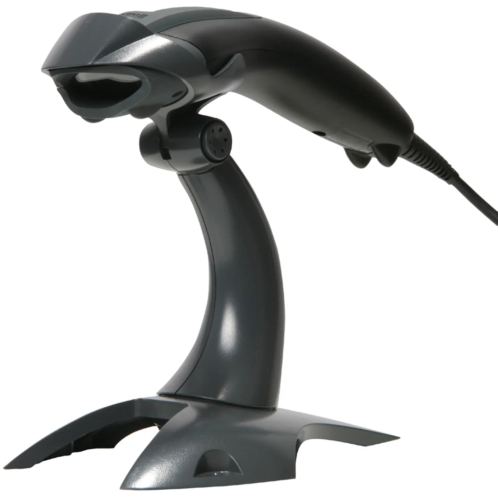

Home
Products
Accessories
Computer & Part
Hardware
Unifi Home Plans
Unifi Business Plan
Software
SQL
Autocount
About Us
Contact Us
Register

Honeywell Voyager 1200g USB Barcode Scanner
RM15.00
High-Performance Scanning: Single-line laser technology for fast, accurate barcode reading
Easy USB Connection: Simple plug-and-play setup with included USB cable
Ergonomic Design: Comfortable grip for prolonged use in busy environments
Versatile Scanning: Reads barcodes on various surfaces, even damaged or low-quality codes
Durable Build: Designed to withstand heavy use in retail, warehouses, and more